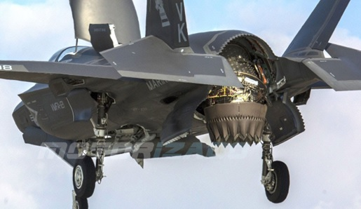

Versies van de F-35
Hier gaat het over de verschillende versies van de F-35. In de tabel staan korte gegevens.
F-35A:
Deze variant is bedoeld voor conventionele luchtmachten en is ontworpen voor gebruik op conventionele landingsbanen en basissen. Hij kan conventioneel opstijgen en landen (CTOL)
F-35B:
Deze versie is ontworpen voor gebruik door mariniers en kan verticaal opstijgen en landen (STOVL), waardoor het geschikt is voor amfibische operaties en operaties vanaf kleine, onvoorbereide landingszones.
↑ Een F-35 die zijn Vertical Take-Off and Landing (VTOL) gebruikt.
F-35C:
De F-35C is aangepast voor gebruik op vliegdekschepen. Het heeft speciale haaksystemen en verstevigingen om te kunnen landen en opstijgen vanaf vliegdekschepen.